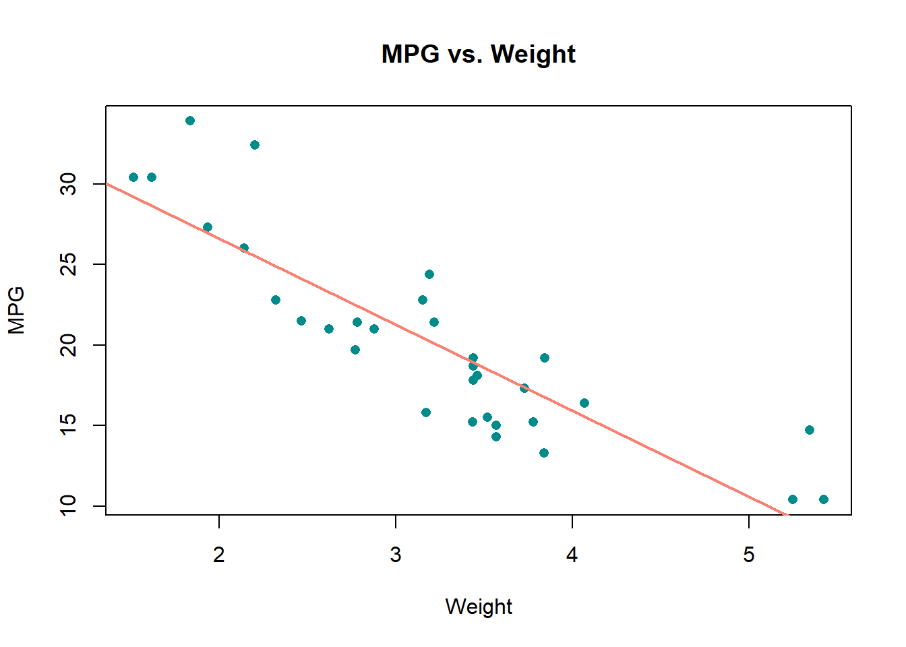

5 Control Flow
Control flow statements allow us to control the flow of our script or data. This functionality is useful for when we want different results depending on specific conditions.
5.1 if and ifelse()
The if statement controls the flow of your R script, branching out to different possibilities if a condition is not met.
x <- 2
if (x == 2) {
'x is 2!'
} else if (x == 3) {
'x is 3!'
} else {
'x is not 2 nor 3!'
}## [1] "x is 2!"The ifelse() function, on the other hand, controls the flow of your vector.
x <- c(1:10)
# If x is divisible by 2, then "even"; else, "odd."
ifelse(x %% 2 == 0, paste0(x, ': even'), paste0(x, ': odd'))## [1] "1: odd" "2: even" "3: odd" "4: even" "5: odd" "6: even"
## [7] "7: odd" "8: even" "9: odd" "10: even"5.2 Loops
Loops allow the user to operate on data iteratively, which is useful for reducing repetitive code.
5.2.1 for loop
In a for loop, we iterate over data for each data element in a sequence.
# Structure of a for loop
x <- c() # empty vector or list.
# For each data element in some_data...
for (i in seq_along(some_data)) {
do_something(some_data[, i])
# The "i" represents the column position in this case.
}Let’s take this example: getting the means for each column in the dataset mtcars, which is pre-loaded into R.
# Getting the means for each column in mtcars.
## Create an empty vector into which we will
## store means.
x <- c()
## For each variable in mtcars...
for (i in seq_along(mtcars)) {
### Store the mean of that variable
### into x.
x[i] <- mean(mtcars[, i])
}
x## [1] 20.090625 6.187500 230.721875 146.687500 3.596563 3.217250
## [7] 17.848750 0.437500 0.406250 3.687500 2.812500There is actually a much better way to get the means of all columns in a dataset, which will be discussed in the Functionals chapter. In the meantime, the following is a more complex use-case of a for loop.
# set 4x3 canvas
par(mfrow = c(2, 3))
# For each column in the dataset iris...
for (i in seq_along(iris)) {
# Plot a histogram.
hist(mtcars[, i], # Get column vector.
xlab = names(iris)[i], # Get name of column.
ylab = 'Frequency', # Set y-axis label.
col = 'cyan4', # Set color of the bars.
# Set the title to be based on the column name.
main = paste(names(iris[i]), 'Distribution'))
}
For more on graphs, see the Graphing chapter.
5.2.2 while loop
In contrast to the for loop, the while loop iterates over data until the specified condition breaks (i.e., no longer true).
# Set an initial value for the while loop.
x <- 0
# While x is less than 10...
while (x < 10) {
# Add 1 to it...
x <- x + 1
# And then print it to the console.
print(x)
}## [1] 1
## [1] 2
## [1] 3
## [1] 4
## [1] 5
## [1] 6
## [1] 7
## [1] 8
## [1] 9
## [1] 105.3 Summary
| Statement.or.Function | Description | Example |
|---|---|---|
| if (condition) {output} | Control the flow of the R script. | if (x == 2) {‘x is 2!’} else {‘x is not 2!’} |
| ifelse(test, yes, no) | Control the flow of a vector. | ifelse(1:10 %% 2 == 0, ‘even’, ‘odd’) |
| for (statement) {output} | Iterate over each data element. |
x <- c(); for (i in seq_along(mtcars)) { x[i] <- mean(mtcars[, i]) }; x |
| while (condition) {output} | Iterate over data until a condition breaks. |
x <- 0; while (x < 10) { x <- x + 1 print(x) } |